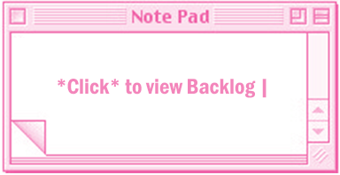
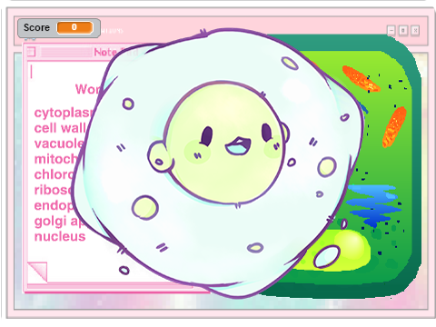
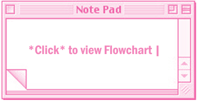
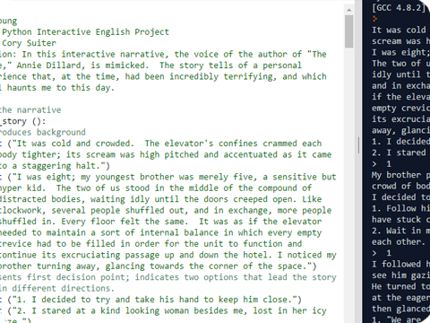

♥ My Scratch Projects ♥
This is my 1.1.3 Scratch Project. We made a head
fly across the screen when the spacebar is pressed.
Click the pic to check it out!
 
This is my 1.1.7 Scratch Project. We made an educational quiz game to teach players the
functions and names of basic organelles found in plant cells. Click the pic to check it out!


This is my Python Interactive English Project.
In this interactive narrative, the voice of the author of "The Chase," Annie Dillard, is mimicked.
The story tells of a personal experience that, at the time, had been incredibly terrifying,
and which still haunts me to this day.